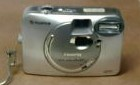

これは愛用のデジカメ。はっきりした記憶はないが、十年ほど前に購入した。σ(-_-)はカメラにこだわりはない。それにメカにも弱い。そこで購入の基準は、
１）シャッター押すだけ
２）有線でパソコンにつなぎ、データを移せる
３）廉価
の３つ。
今回の台湾観光には、もちろん持参。ただ今回は ちと心配なことがあった。古いのでメモリーが小さい。それと設定がフルサイズになっているので、一度に30枚くらいしか写せないこと。そこでこれまでは、数枚でも写したあとは
そのつどパソコンにデータを移してメモリーを空にしていた。
今回は１週間の観光旅行なので、撮影可能が30枚では ちと困る。そこで設定を小さくして撮影枚数を増やすことにした。しかしメカオンチのσ(-_-)は設定変更などできない。そこで長男に頼んだ。二つ返事で引き受けた長男がカメラを手にとって、ナニコレ？
「ン？」と聞き返すと、
「260万画素って、ボクの携帯の半分もない」
「いいんだよ、別に。お父さんは満足してるから」
コチョコチョコチョ
「はい できた。これで100枚撮れる」
「おお、タンキュウ ベルマッチ(^-^)/」
「でも これってメモリーを入れ替えれば、もっと撮れると思うけど....」
と云いながらウラ蓋を開けてメモリーを取り出した。
「えっ スマートメディア！、おまけに16メガ」
「それがどうした」
「いまどきスマートメディアなんて....古う...」
「古くたっていい。じゃあ台湾へ行く前に、どっかへ行って大きいメモリーを買ってくるか」
翌日、さっそく某大型店にでかけた。売り場で希望を伝えると、
「すみません お客さん、うちではもうスマートメディアは扱ってません」
「え〜...」
「もう どこのお店にもないと思いますよ」
がっくりしながら帰宅する途中、ハッと思い出した。（そういえばカメラを買ったころ、なんか予備のメモリーも買ったような....） 帰宅してさっそく心当たりをひっかき回してみた。ありましたよ ８メガのスマートメディア(^-^)v これであと50枚は堅い。それ以上必要になれば、携帯でカバーするより仕方がない。
予定通り台湾ではバンバン撮りまくって、メモリーは すべて使い切った。足りない分はσ(-_-)と女房の携帯でフルカバー。意気揚々と帰国して、さっそくデータをパソコンに移そうとしてびっくり。
パソコンとは有線でつなぐわけだが、その回線が見あたらない(?_?) デジカメ専用なので、この10年間 つなぎっぱなし。取り外したことはない。パソコンもσ(-_-)専用なので、子供がさわることもない。第一 古いデジカメ専用回線など、子供が持ってくわけがない。必死になってさがしまくったが、まったく見つからない....かといって回線が無ければ
せっかくの写真が立ち往生。仕方ないので、今度はデータ回線を買ってくることにした。
また例の某大型店へ行くと、
「すみません お客さん、そんな古いカメラの付属品はありません。メーカーにも在庫はないと思います」
う〜むと思ったところで、ハタと気がついた。
「それではスマートメディアにも対応してるカードリーダーみたいなものはありませんか」
「あぁ、見てみます」 やがて「ありました」とある商品を取り出した。喜んで購入し、帰宅して作業してみると、すべての画像を処理できた。
偉いぞ サンワサプライ（株）、えらいぞ MADE IN TAIWAN(^-^)V
|